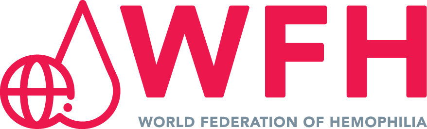

State of the Art in Haemophilia: Self Assessment Program
Towards a Hemostatic
Rebalancing
Innovation, Subcutaneous Route, and Humanism. The definitive program to lead the clinical transition towards rebalancing agents (Anti-TFPI).
"Precision medicine not only inhibits molecular pathways; it frees the patient's life project."
A Paradigm Shift:
From Replacement to Rebalancing.
The Clinical Rationale of TFPI Inhibition.
The hematological vanguard demands updating competencies today.
UX Methodology and Official Certification.
A virtual learning environment designed to guarantee the acquisition of competencies, requiring sequential navigation as demanded by the National Commission.
-
school
Continuous Formative Evaluation
Interactive questionnaires (Self-Assessments) at the end of each module with instant reasoned feedback.
-
auto_stories
World-Class Content
Curriculum strictly based on "Haemophilia", the official journal of the WFH and EAHAD.
-
bolt
Asynchronous Flexibility
100% online adaptive study with advanced visual support for busy medical schedules.

Literary EndorsementProgram Objectives.
To train the specialist through three fundamental dimensions for the new era of hemostatic treatment.
Genomic Dimension
Understand the influence of genetic architecture through NGS tools to predict inhibitor risk and response to new systemic therapies.
Therapeutic Dimension
Master the mechanism of action of anti-TFPIs, interpret thrombin generation assays (TGA), and apply safe clinical transition (Switching) algorithms.
Humanistic Dimension
Incorporate Shared Decision-Making (SDM) models and PROs evaluation to minimize the Treatment Burden and empower patient autonomy.
Excellence Training in Hematology.
Transversal impact by medical profiles.
Medical Residents
Building the foundations of genomic medicine and thrombin generation from their residency.
Specialists
Providing safe clinical algorithms for the transition (switch) to subcutaneous therapies.
Heads of Department
Facilitating the update of department protocols backed by the latest evidence (BASIS and explorer).
Pharmacy Committees
Understanding the impact of the Treatment Burden and clinical autonomy on hospital pharmacoeconomics.
The Scientific Curriculum.
3 Modules of Excellence.
Structured under the highest UX standards for CME: Formatted Syllabus, Critical Debates, Clinical Cases, and Formative evaluations in each module.
Establishing the need for molecular characterization for personalized medicine and to predict clinical behavior towards new systemic therapies.
Module Structure
- play_arrow Executive Brief: From mutation to phenotype: Why genetics dictates the future of treatment?
- play_arrow Scientific Core: Genotype-phenotype correlation and Next-Generation Sequencing (NGS) with "key takeaways".
- play_arrow Critical Debate: Is universal genetic screening ethical and cost-effective in all degrees of severity?
- play_arrow Further readings: Brief summaries with direct links to PubMed and open-access WFH genetic registries.
- play_arrow Practice insights: How to interpret a complex genetic report in daily practice to predict inhibitors.
- play_arrow Clinical Cases: Interactive resolution: pediatric patient with high-risk mutation. Management of genetic counseling.
- play_arrow Self-Assessment: Interactive evaluation questionnaire with reasoned feedback to consolidate concepts.
- play_arrow Multimedia: Explanatory videos and 3D animation on the coagulation cascade at the molecular level.
Comprehensive analysis of the clinical evidence, efficacy, and clinical safety of anti-TFPI monoclonal antibodies.
Module Structure
- play_arrow Executive Brief: Inhibition of the tissue factor pathway: A new path to hemostasis.
- play_arrow Scientific Core: Results of pivotal phase 3 clinical trials (BASIS and explorer), endpoints and safety.
- play_arrow Critical Debate: Therapy monitoring through thrombin generation assays and proactive management.
- play_arrow Further readings: Most recent WFH/EAHAD consensus guidelines on non-replacement therapies.
- play_arrow Practice insights: Clinical decision algorithm: What patient profile is ideal to start prophylaxis?
- play_arrow Clinical Cases: Practical approach of therapeutic transition (switching) from IV to subcutaneous.
- play_arrow Self-Assessment: Questionnaire on dosing, rescue regimens, and safety of rebalancing agents.
- play_arrow Multimedia: Curation of symposium videos and interactive AI-generated MoA.
Integrating the technical advantage of the subcutaneous route with the Hippocratic Medicine model, focusing on clinical autonomy and reducing Treatment Burden.
Module Structure
- play_arrow Executive Brief: From Disease to Illness: How the subcutaneous route redraws the patient's biography.
- play_arrow Scientific Core: Patient-Reported Outcomes (PROs), adherence metrics, and Quality of Life (QoL).
- play_arrow Critical Debate: The impact of self-management: Does fewer hospital visits mean a loss of alliance?
- play_arrow Further readings: Bibliography on Narrative Medicine, Treatment Burden, and Shared Decision-Making.
- play_arrow Practice insights: Quick guide to empower the patient to travel, work, or practice sports.
- play_arrow Clinical Cases: Young adult with needle phobia and poor venous access. Socio-occupational impact.
- play_arrow Self-Assessment: Evaluation of the application of QoL scales and empathetic communication tools.
- play_arrow Multimedia: High emotional impact material: testimonies and short documentaries backed by the WFH.
Institutional Academic Direction.
Reference KOLs in Spanish Hematology.
Dr. Víctor Jiménez Yuste
Head of Hematology Department. Hospital Universitario La Paz (Madrid).
Dra. María Teresa Álvarez Román
Head of Hemostasis Section. Hospital Universitario La Paz (Madrid).
Dr. Ramiro Núñez Vázquez
Haemophilia Reference. Hospital Universitario Virgen del Rocío (Seville).
The Patient
at the Center.
A holistic approach to the patient.
Our educational proposal culminates by expanding the purely pharmacological horizon. We equip the clinician with tools so that the subcutaneous route becomes a true catalyst for the patient's biography. Join as an institutional sponsor to lead this educational vanguard.